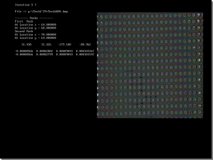

Osebni raèunalnik PC X86


Raèunalniški programi - Video extenziometri
Raèunalniški programi za zajem in analizo slike z DataTranslation DT2853
| NAROÈNIK: | Center za eksperimentalno mehaniko (CEM) | |
| OPIS: | Programi so namenjeni za zajem, shranjevanje in analizo video slike, pri èemer se izraèuna deformacija iz predhodno doloèenega položaja dveh merilnih oznak namešèenih na preizkušancu. Posamezni programi (Extensio.exe, Videoacq.exe) omogoèajo proženje in pošiljanje izmerjenih vrednosti v nadzorni raèunalnik prek RS-232 komunikacije. | |
| PROG. DATOTEKA: | Ekst_u35.exe, Deformat.exe, Extensio.exe, Videoacq.exe | |
| STROJNA OPREMA: | Digitaliztor
videoslike DataTranslation DT2853 Osebni raèunalnik PC X86 |
|
| PROGRAMSKI MODULI: | RS232 komunikacija, zajem in obdelava slike | |
| PROGRAMSKI JEZIK: | Miscosoft C | |
| OPERACIJSKI SISTEM: | DOS | |
| LETO IZDELAVE: | 1997-1998 |
Raèunalniški program za optièno merjenje deformacij z 2D FFT
| NAROÈNIK: | Center za eksperimentalno mehaniko (CEM) | |
| OPIS: | Program je namenjen kontinuiranemu optiènemu merjenju deformacij in dimenzij mreže, ki je natisnjena na preizkušancu. Analiza slike mreže je izvedena s pomoèjo 2D FFT transformacije pri èemer se izraèuna deformacija tako po Lagrangeu kot tudi Eulerju. Izraèunane dimenzije v vertikalni, horizontalni smeri ter zasuku mreže in deformacije epsx, epsz, epsxz, vkljuèno z glavni deformaciji eps1 ter eps2 se zapisujejo v datoteko. Bitno sliko za analizo lahko program zajame direktno z video kamero s pomoèjo digitalizatorja slike ali pa sliko, ki je shranjena v obliki BMP formata na prenosnem mediju, priklièe iz datoteke in jo uporabi v analizi. Program omogoèa poleg zajema in analize videoslike tudi shranjevanje slike v BMP formatu. | |
| PROG. DATOTEKA: | Strain.exe | |
| STROJNA OPREMA: | Digitaliztor
videoslike DataTranslation DT2853 Osebni raèunalnik PC X86 |
|
| PROGRAMSKI MODULI: | Zajem in obdelava slike z 2D FFT, grafika, maske, shranjevanje videoslike v BMP format | |
| PROGRAMSKI JEZIK: | Miscosoft C | |
| OPERACIJSKI SISTEM: | DOS | |
| LETO IZDELAVE: | 1999 | |
|  |
Raèunalniški program za optièno merjenje deformacij z DataTranslation DT2853
| NAROÈNIK: | Center za eksperimentalno mehaniko (CEM), BASF | |
| OPIS: | Program je namenjen kontinuiranemu optiènemu merjenju deformacij treh preizkušancev s pomoèjo digitalizacije videoslike in hkratnemu sprejemu podatkov o temperaturi (sobe, komore in preizkušanca), ki jih dobi iz nadzornega raèunalnika na katerem teèe program Monitor.exe za spremljanje temperature. Podatki o temperaturi se prenašajo preko RS-232 komunikacije iz nadzornega raèunalnika. Program izmeri razdaljo med dvema vzporednima oznakama (markerji) in izraèuna deformacijo. Izraèunane podatke in sprejete podatke o temperaturi program izpiše v številèni obliki na zaslon in jih zriše v diagramu. Vzporedno s prikazom se podatki shranjujejo v izbrano datoteko. Program dodatno omogoèa nastavitev digitalizacijske kartice, sprejem in shranjevanje paketa podatkov o temperaturi iz nadzornega raèunalnika ter sinhronizacijo èasa z nadzornim raèunalnikom. Program omogoèa linearni in logaritmièni zajem podatkov. | |
| PROG. DATOTEKA: | Extensio.exe | |
| STROJNA OPREMA: | Digitaliztor
videoslike DataTranslation DT2853 Osebni raèunalnik PC X86 |
|
| PROGRAMSKI MODULI: | RS232 komunikacija, zajem in obdelava videoslike, grafika, maske, zvok | |
| PROGRAMSKI JEZIK: | Miscosoft C | |
| OPERACIJSKI SISTEM: | DOS | |
| LETO IZDELAVE: | 1999-2000 | |
 |